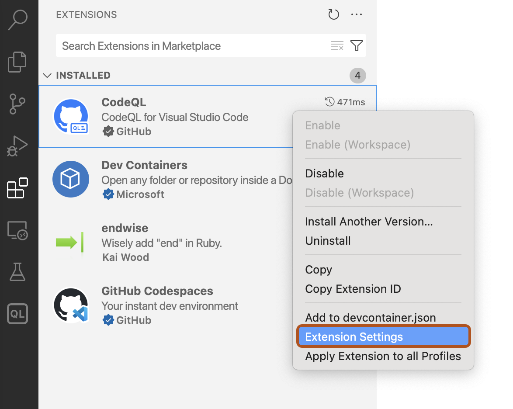
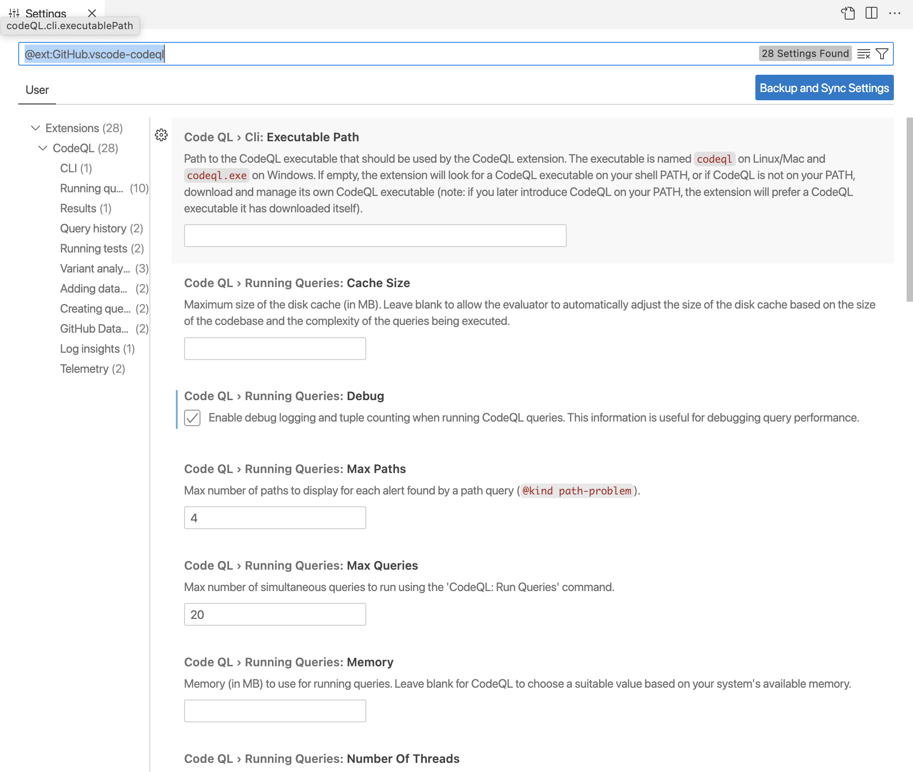

You can edit the settings for the CodeQL for Visual Studio Code extension to suit your needs.
You can change numerous settings for the CodeQL for Visual Studio Code extension, including:
Open the "Extensions" view and right-click CodeQL, then click Extension Settings.

In the Settings window, edit settings as desired. The new settings are saved automatically.

Tip
Alternatively, you can edit the settings in JSON format by opening the VS Code Command Palette and selecting Preferences: Open User Settings (JSON).
To override the default behavior and use a specific version of the CodeQL CLI, you can specify the CodeQL CLI "Executable Path" in the extension settings, and point it to your existing copy of the CodeQL CLI. That is, the file named codeql (Linux and macOS), or codeql.exe (Windows). For more information about the default behavior, see Managing the CodeQL CLI in the VS Code extension.
The query history "Format" setting controls how the extension lists queries in the query history. By default, each item has a label with the following format:
QUERY-NAME on DATABASE-NAME - QUERY-STATUS NUMBER-OF-RESULTS [QUERY-RUNTIME]
To override the default label, you can specify a different format for the query history items.
By default, items in the "Query History" view are retained for 30 days. You can set a different time to live (TTL) by changing the "Query History: Ttl" setting. To retain items indefinitely, set the value to 0.
There are a number of settings under "Running Queries". For example, if your queries run too slowly and time out frequently, you may want to increase the memory by changing the "Running Queries: Memory" setting.
If you want to examine query performance, enable the "Running Queries: Debug" setting to include timing and tuple counts. This will then be shown in the logs in the CodeQL "Query Server" tab of the "Output" view. The tuple count is useful because it indicates the size of the predicates computed by the query.
To save query server logs in a custom location, edit the "Running Queries: Custom Log Directory" setting. If you use a custom log directory, the extension saves the logs permanently, instead of deleting them automatically after each workspace session. This is useful if you want to investigate these logs to improve the performance of your queries.
There are a number of settings under "Variant Analysis" that you can use to define or edit lists of GitHub repositories for variant analysis, and change to a different controller repository. For information on the purpose and requirements for a controller repository, see Running CodeQL queries at scale with multi-repository variant analysis.
You can also edit the items shown in the "Variant Analysis Repositories" view by editing a file in your Visual Studio Code workspace called databases.json. This file contains a JSON representation of all the items displayed in the view. To open your databases.json file in an editor window, click the { } icon in the top right of the "Variant Analysis Repositories" view. You can then see a structured representation of the repositories, organizations and lists in your view. For example:
{
"version": 1,
"databases": {
"variantAnalysis": {
"repositoryLists": [
{
"name": "My favorite JavaScript repos",
"repositories": [
"facebook/react",
"babel/babel",
"angular/angular"
]
}
],
"owners": [
"microsoft"
],
"repositories": [
"apache/hadoop"
]
}
},
"selected": {
"kind": "variantAnalysisSystemDefinedList",
"listName": "top_10"
}
}
You can change the items shown in the view or add new items by directly editing this file.
To automatically add database source folders to your workspace, you can enable the "Adding Databases: Add Database Source to Workspace" setting.
This setting is disabled by default. You may want to enable the setting if you regularly browse the source code of databases (for example, to view the abstract syntax tree of the code). For more information, see Exploring the structure of your source code.
Note
If you are in a single-folder workspace, adding database source folders will cause the workspace to reload as a multi-root workspace. This may cause query history and database lists to reset.
Before enabling this setting, we recommend that you save your workspace as a multi-root workspace. For more information, see Multi-root Workspaces in the Visual Studio Code documentation.
To increase the number of threads used for testing queries, you can update the "Running Tests: Number Of Threads" setting.
To pass additional arguments to the CodeQL CLI when running tests, you can update the "Running Tests: Additional Test Arguments" setting. For more information about the available arguments, see test run.
You can configure whether the CodeQL extension collects telemetry data. This is disabled by default. For more information, see Telemetry in CodeQL for Visual Studio Code.